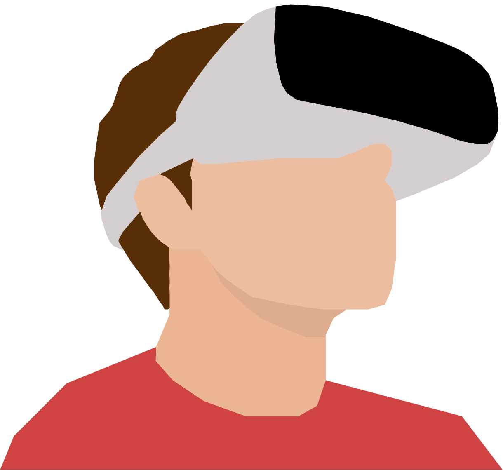

Creating a Virtual Clinic for Stroke Prevention
Made with Figma
PROBLEM
Stroke diagnosis and management is extremely difficult in low-income countries, where there is a lack of medical resources such as equipment and trained personnel.
REQUIREMENTS
• Work with four peers to design a technology for stroke prevention
• Analyze current approaches to stroke prevention
• Perform a value-analysis of the proposed design and identify its limitations
• Outline a path to adoption for the proposed solution
SOLUTION OVERVIEW
We would like to target individuals in low- and middle-income countries as mortality rates from strokes are ten times higher there than in richer nations (Ovbiagele et al.). Given that individuals from these countries often lack access to physicians with stroke expertise or advanced technologies, such as iPhones, our solution is not a mobile app, and does not assume any medical or technical expertise (Bridging the Gap). Additionally, given that our target audience will not have great financial means, our team wants to propose a product that will be located in a communal space, allowing as many people as possible to view and access our technology.
Our solution is a virtual clinic powered by a VR headset, video camera, and microphone. A VR headset will be placed in an accessible area, such as a pharmacy or a community center, so that it can be reached by many individuals. A camera will be located nearby and pointed towards the VR headset so that it can record the actions of those who use it. Likewise, a microphone will be placed near the VR headset to record sound, specifically the statements of the individuals who use the VR headset.
The hardware of the system is simple - a VR headset, video camera, and built-in microphone - and the virtual clinic is a program run by the VR system. Once an individual puts the headset on, he/she will see a clinic and a doctor avatar. The virtual doctor will communicate with the wearer and ask the patient to perform specific tasks to check for symptoms of stroke. The first task for the user is to walk 20 steps around the virtual clinic, during which the wearer’s heart rate and acceleration is monitored. The second task is to repeat a phrase or sentence that the doctor says to detect any slurring of speech. The third task is to mimic the virtual doctor’s actions by lifting his/her arms, which will reveal any numbness or weakness in the user’s arms. After the wearer completes these three tasks, he/she will be asked to self-report any known symptoms. The entire session will be recorded (including the motion data collected by the VR system) and sent to a physician abroad for analysis at the conclusion of the appointment.
Our solution aims to tackle the obstacle of accessibility. As mentioned prior, strokes are ten times more prevalent in low- and middle-income nations, primarily because doctors with stroke expertise cannot easily access patients in these countries, preventing opportunities for early detection and prevention (Ovbiagele et al.). Our system bridges the gap between physicians and patients in these areas and provides accurate data for stroke detection, such as irregular heart rate, uneven step acceleration, slurring of speech, numbness/weakness in the arms, and headaches and dizziness (self-reported). Furthermore, our solution differs from contemporary virtual visits such as telestroke as it creates an immersive environment for patients through the addition of virtual reality, which can improve the quality of the data collected and thus allow physicians to improve the quality of their care through more accurate diagnosis (De la Peña et al.). Additionally, since our system is focused on delivering the data collected during virtual visits to doctors rather than placing them in the virtual visit itself, physicians no longer need to take the time to be trained to use the system, thereby removing a common barrier that telestroke faces. Thus, by connecting physicians to remote patients and increasing the overall quality of treatments, our solution improves physician-value by decreasing hospitalizations for stroke, therefore freeing resources for other uses.
VALUE ANALYSIS
Upon implementing our system in low- and middle-income communities, we will collect various data from the visits to evaluate our solutions’s value to physicians. Our primary goal is to provide physician access to patients in hard-to-reach communities, which creates opportunities for early detection and prevention and thus decreases the number of hospitalizations due to stroke. Indirectly, we would also like to decrease the cost of stroke diagnosis and treatment for physicians, enhance physician efficiency by freeing them up to see more patients, and increase the quality of physician treatments by providing doctors with accurate data quickly. To measure how well our solution meets our goals, we will measure changes in hospitalizations rates for strokes in areas where our solution is currently implemented and distribute patient and physician surveys to examine the indirect goals listed above.
The best way to prevent strokes is to identify at-risk people and catch stroke symptoms before the damage becomes too catastrophic. Low- to middle-income people do not have enough access to medical care, claiming that “most commonly reported barriers across studies were transport difficulties, financial difficulties and attitudes of staff” (Bright, 2018). By implementing VR clinics in public spaces, such as pharmacies or communal areas, users will face fewer transport difficulties to access a medical provider, and VR consultation eliminates potential issues of staff quality. By measuring the number of people who visit our clinics and the number of repeated visits, we can gauge changes in the number of physician-patients connections in scenarios that would’ve otherwise never occurred. Furthermore, by recording the number of patients admitted to nearby hospitals following their VR visits, we can compare the percent of hospitalizations among VR users to that of non-VR users in similar areas to analyze if our solution is decreasing the number of strokes in these communities over a 5- and 10-year period.
Our second goal to increase physician-value is to increase doctor efficiency in the office. Strokes cost our healthcare system an estimated $36.5 to $65 billion a year, with projections to exceed $180 billion by 2030 (Johnson et. al, 2016). Physician fees not only play a large role in that sum, but the marginal cost of patients missing appointments and disturbing organized office workflow adds to that cost as well. By making stroke consultations virtual, doctors will no longer need to rely on patients’ transportation, and can thus work on more patients in a day. To measure the quality of physician diagnoses based on VR videos and the accuracy of our data, we will conduct a monthly survey with participating physicians that collects the number of patients they helped that month, the number of stroke misdiagnoses due to inaccurate data from the VR system, and the doctors’ opinions on the success of the virtual visit. Additionally, patients will receive a survey to measure their satisfaction with their care. By analyzing both sides, we will be able to determine if the doctor increased both the number of patients seen in a day and the quality of their care.
We plan to observe changes in these aspects within the first year. After 5 years following implementation, we will analyze the results of our solution and compile an accurate overview of our platform’s value to physicians. We will then continue to monitor the results of our solution for the remaining 5 years to analyze the long-term sustainability of our solution.
LIMITATIONS
While the benefits of our proposal are vast, a few possible limitations may exist. Firstly, placing patients, who may be undergoing a stroke, in an unknown environment or one that is greatly different from the natural world may produce great shock and hinder mental-alignment. By replacing “sensory information from the physical world, users may partially replace their sense of presence in the physical world, or in their physical body” (Won et al., 2016). This phenomenon may lead to inaccurate movements depicted by the patient, as the tests required by our system are heavily relied on physical movement. It will be, then, vital for the success of our technology that the patient is given time to accommodate to the VR and she is immersed gradually in order to slowly gain comfortability and acceptance. Secondly, the onboarding costs of implementing VR technology may pose a threat to the accessibility of virtual stroke diagnoses. While most hospitals are equipped with the necessary tools to correctly diagnose a stroke, such as a CT and MRI scanner, they will need to spend additional capital expenditure to expand to a VR-compatible schema. Such investments may range from a $800 to upwards of $15,000 depending on the processing power and tools the clinic needs. However, we believe that the overall improvements in the speed of diagnoses, as well as the newfound ability for patients in low/middle income countries to receive stroke treatment, justify the high costs.
PATH TO ADOPTION
Long-term, our proposal will occur in three phases. First, we will find shared spaces, such as a room in a grocery store, pharmacy, or community center and install the necessary hardware components. To create multiple virtual clinics in various locations, we will need to purchase several sets of VR systems. Once the installation of the system is complete, the virtual clinic is ready to be used. The second phase of our proposal will be to increase awareness of our system and encourage regular virtual visits via outreach and advertisement to locals in the surrounding areas. Due to the novelty of our system, many users may be skeptical or wary of using our model. Thus, we will need to find ways to bridge this gap and establish trust between both the physicians and patients. If our solution is successful, we would eventually like to open additional virtual clinics to increase the coverage of our service and increase the number of areas that physicians can help. Finally, once our system becomes more accepted by users and if VR headsets become extremely affordable, we would like to transition our system to individually-owned headsets, allowing physicians to deliver care without requiring patients to leave the comfort of their homes.
WORKS CITED
“Bridging the Gap - Smartphones in Third World Countries.” Women Love Tech, Women Love Tech, 14 Oct. 2017, womenlovetech.com/bridging-the-gap-smartphones-in-third-world-countries/.
De la Peña, Nonny, et al. "Immersive journalism: immersive virtual reality for the first-person experience of news." Presence: Teleoperators and virtual environments 19.4 (2010): 291-301.
Ovbiagele, Bruce, and Mai N. Nguyen-Huynh. "Stroke epidemiology: advancing our understanding of disease mechanism and therapy." Neurotherapeutics 8.3 (2011): 319.